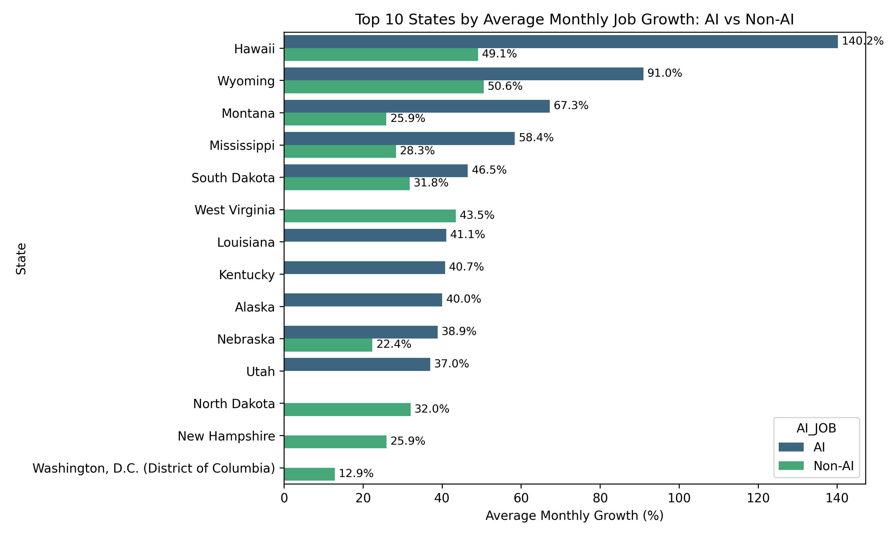
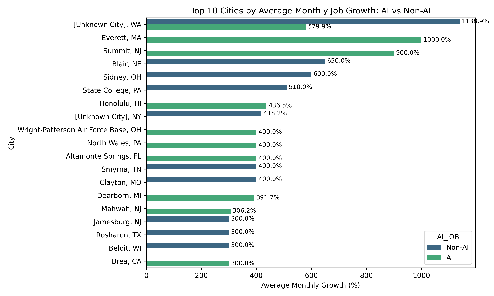
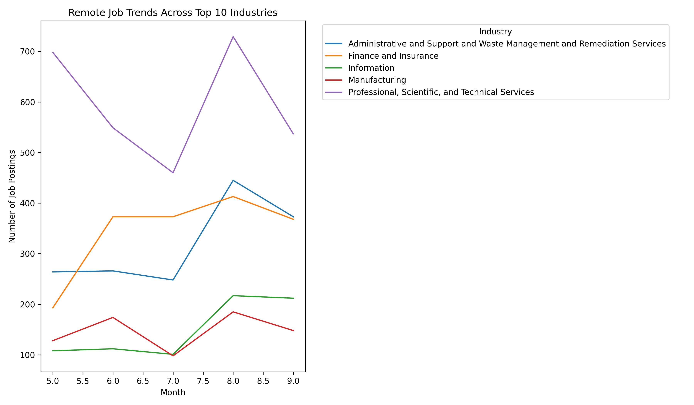
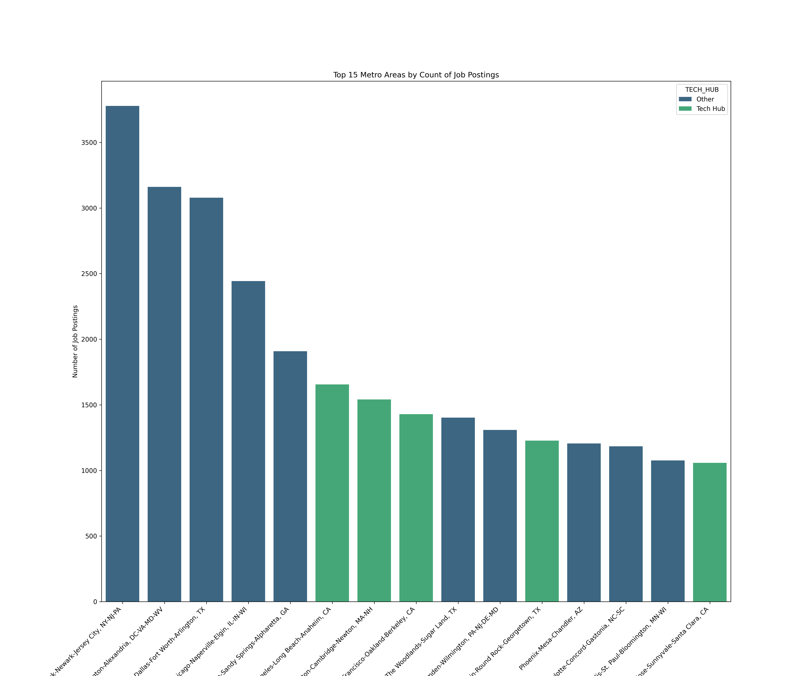
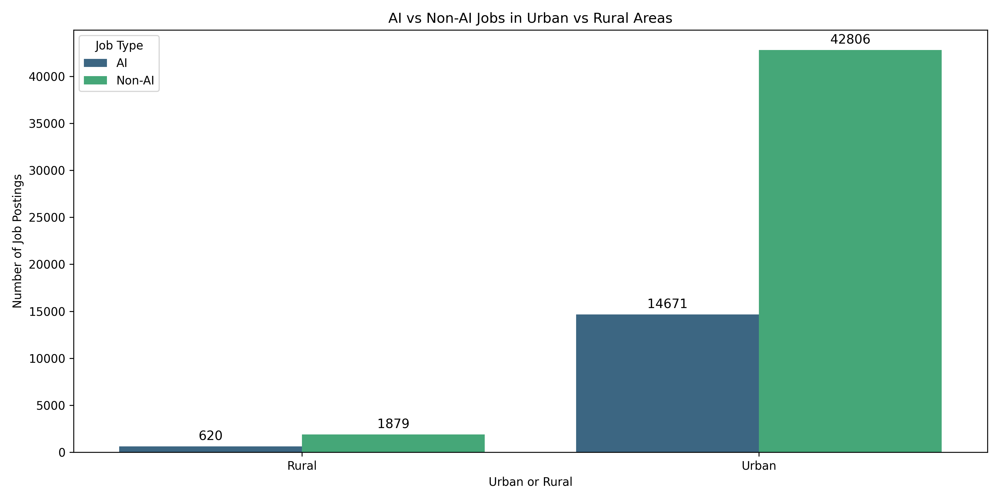

Project Overview
1 Introduction and Research Rationale
Artificial intelligence, also known as AI, is redefining the labor market, shaping not only how work is done but also where work is done. As businesses adopt AI-driven tools and automation, demand for data science, machine learning, and software roles continues to grow, while routine administrative and operational jobs decline (Kahn et al, 2024). This recent shift has created a new geography of employment, where technological infrastructure and remote work options play central roles.
Remote work, accelerated by the COVID-19 pandemic and continued by companies adoption of this practice, has ereated more high-wage, skill-based positions. However, the benefits of this expansion are unevenly distributed as we will see in our analysis. Traditional technology hubs such as Silicon Valley, Austin, and Boston continue to hire a high number of tech/AI affected roles, while smaller metro areas and rural communities face challenges in attracting and retaining AI-related talent (Sheffi, 2024). At the same time, our data shows that remote and hybrid work models are allowing some decentralization, offering emerging regions new opportunities for growth.
This research analyzes how AI roles and other non-AI roles may be affected by geographic and remote work trends in 2025. The study investigates which states and urban areas demonstrate the highest job growth in AI versus non-AI careers, whether remote positions are increasing across industries, and how urban and rural job markets differ in AI accessibility. Based on our research, it is expected that AI roles will remain concentrated in tech-oriented regions, but it also seems that other non traditional metro areas may be seeing growth not previously seen. Also, remote work is anticipated to remain more prevalent in AI and technology fields, as well as higher salaries in both AI related jobs and remote jobs (Solo et al., 2025). Below are the main focal points of our research:
1.1 AI vs. Non-AI Job Growth
Preliminary findings indicate that AI-related positions are growing in states such as Hawaii, Wyoming, and Montana. In contrast, non-AI jobs remain more evenly distributed, with steady growth across states with large service or manufacturing economies.


1.2 Trends in Remote Work Across Industries
Remote job listings continue to represent a significant share of AI-related careers, especially in Finance and Insurance and Information Industries. Conversely, manufacturing and professional and technical services remain predominantly on-site.

1.3 Tech Hubs vs. Emerging Locations
Our data shows that job postings are the highest in the New York, Washington DC, Dallas, and Chicago metro areas, while the traditional tech hubs like Boston, the Bay Area, and Austin actually aren’t at the top of job postings anymore. The data suggests that this is mostly due to high populations, so a deeper dive into industry would help in showing emerging markets outside of traditional tech hubs.

1.4 Urban vs. Rural Dynamics
Urban regions continue to host the majority of AI employment due to their access to universities, data infrastructure, and venture capital. However, remote work options are beginning to bridge the urban-rural divide, allowing rural professionals to participate in digital industries without relocating. Rural job markets, while smaller, show almost exact proportions of AI and Non-AI postings, reflecting that AI jobs as a whole don’t necessarily require specific locations.

1.4.1 References
Khan, A., Shad, F., Sethi, S., & Bibi, M. (2024). The impact of artificial intelligence (AI) on job displacement and the future of work. Social Science Review Archives, 2(2), 2296–2306. https://doi.org/10.70670/SRA.v3i1.509
Sheffi, Y. (2024). Technology is not enough: Potential job displacement in an AI-driven future. Journal of Supply Chain Management, Logistics and Procurement, 6(4), 338–351.
Solo, L. B., Hossain, S., & Weah, S. S. II. (2025). AI-powered job market insights: How AI adoption influences salary and job growth projections. North American Academic Research, 8(2), 224–241. https://doi.org/10.5281/zenodo.15212191